下面将在用户和账户进行一对一查询的基础上进行介绍SpringBoot集成Mybatis实现多表查询的基于xml的两种方式。
首先我们先创建两个数据库表，分别是user用户表和account账户表
user表：
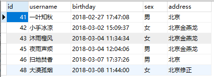
account表：
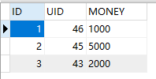
然后创建实体类
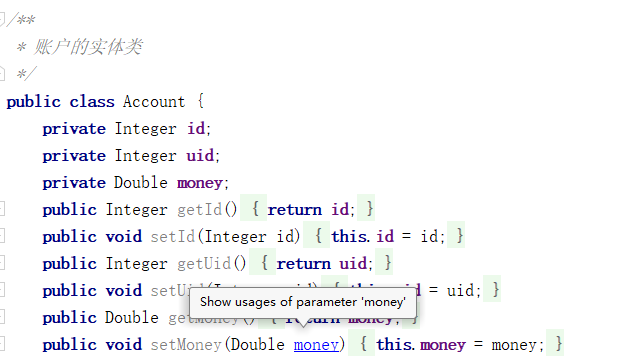
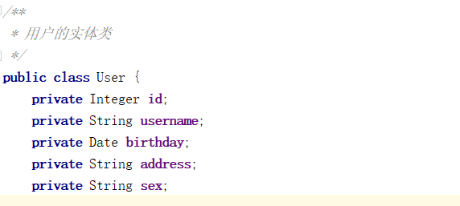
**第一种通过创建子类的方式查询
需求：查询所有的用户基础信息以及其所属的账户中的金额
1.创建想要得到多表查询数据的实体类（子类）
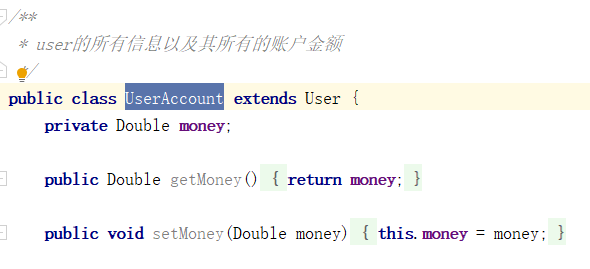
2.创建对应的Dao以及Service及实现类
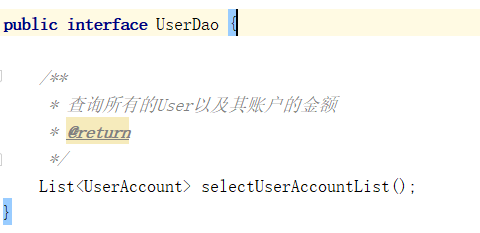
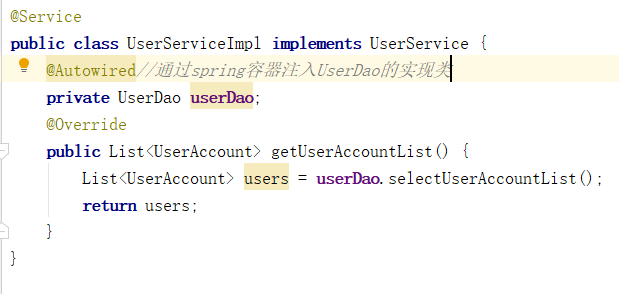
3.xml中写实现查询的sql语句
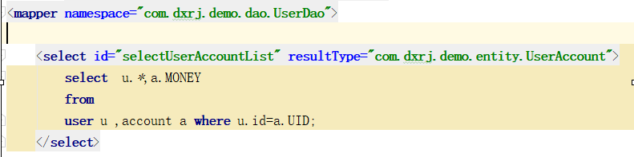
4.编写控制器并访问资源路径
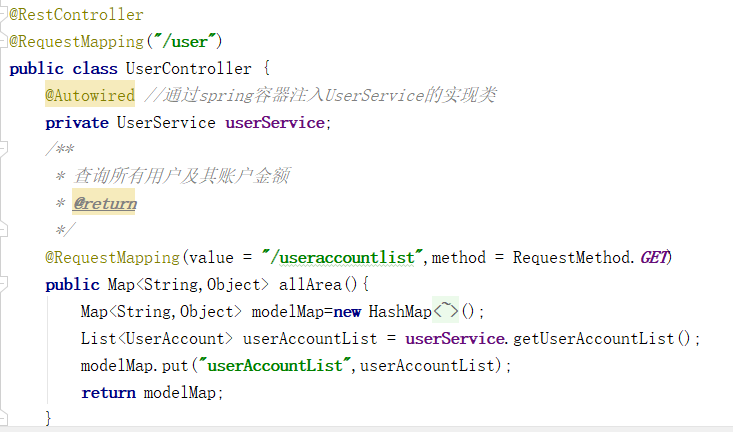
访问资源路径：
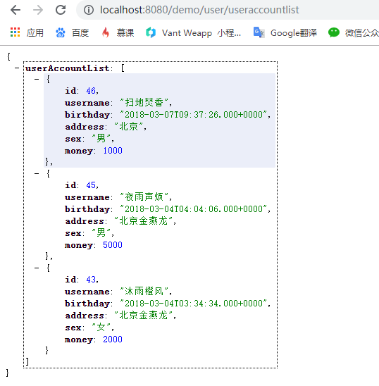
**第二种通过建立实体类关系方式查询
需求：查询所有账户及其所属用户的所有基础用户信息
这种方式也是目前为止最为常用的一种方式，许多教学教程上也都采用了这种方式，那么我们一起来看看。
首先这种方式不需要向第一种方式那样创建一个子类用来封装查询的结果集，但从表实体应该包含一个主表实体的对象引用
只需要在Account实体类中增加一个user属性即可,并生成对应的getter和setter方法。修改如下：
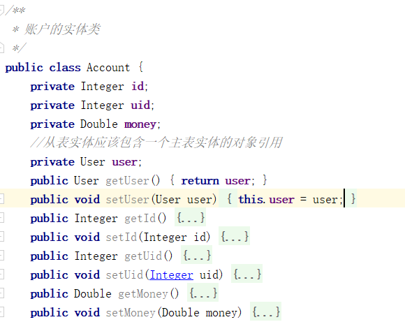
接下来是在xml中进行映射实体类关系
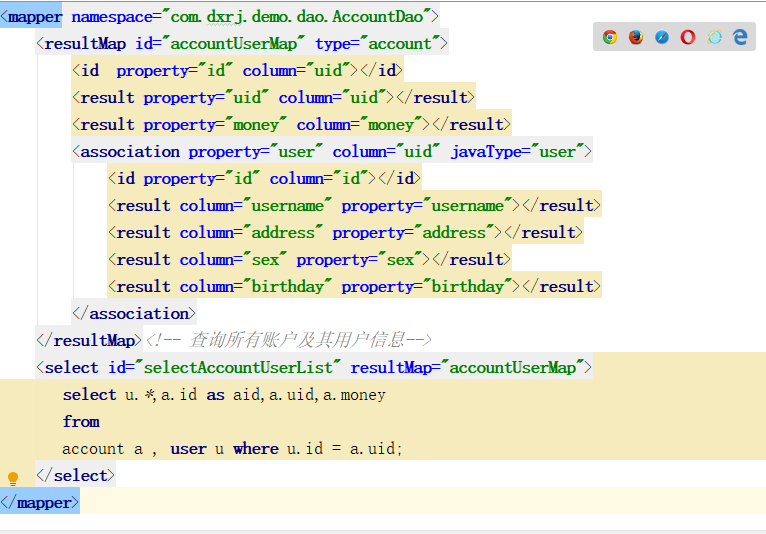
对应的dao和service就不再具体截图出来了，接下来是控制器（也没变化）。
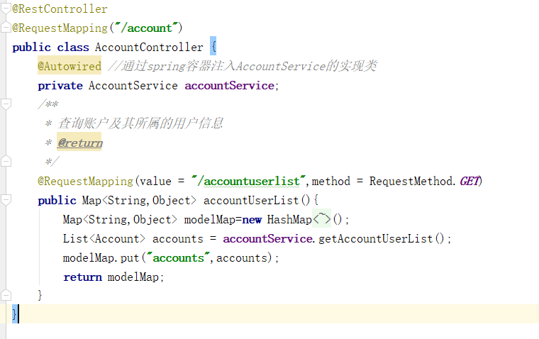
接下来访问资源路径：
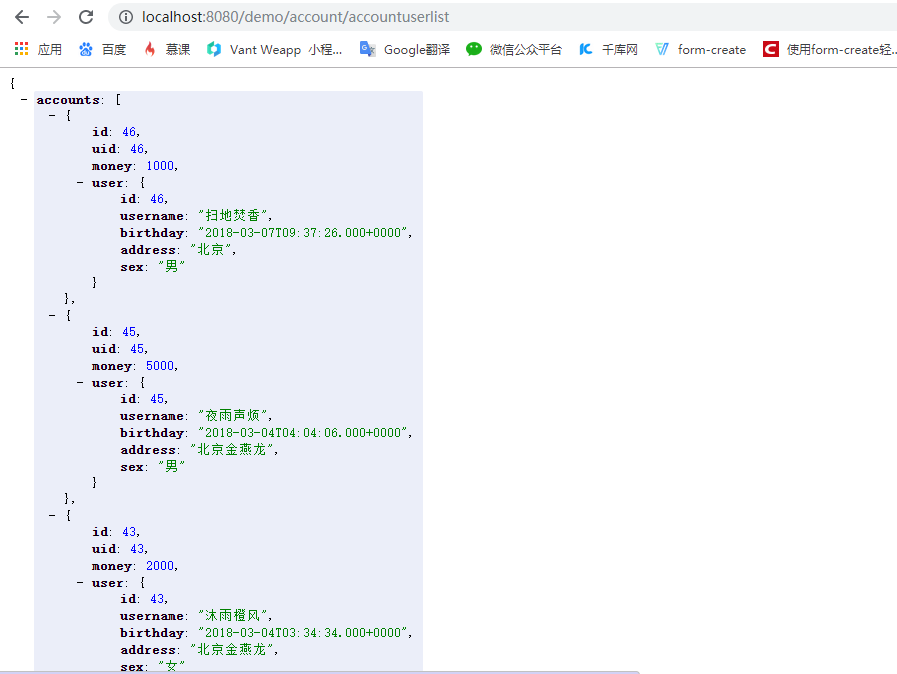
总结：
两种方式都是对实体类进行了一些调整，第二种用了跟实体类建立了映射关系，关于Mybatis中实体类属性与数据库列表间映射方法可以看后面的随笔。